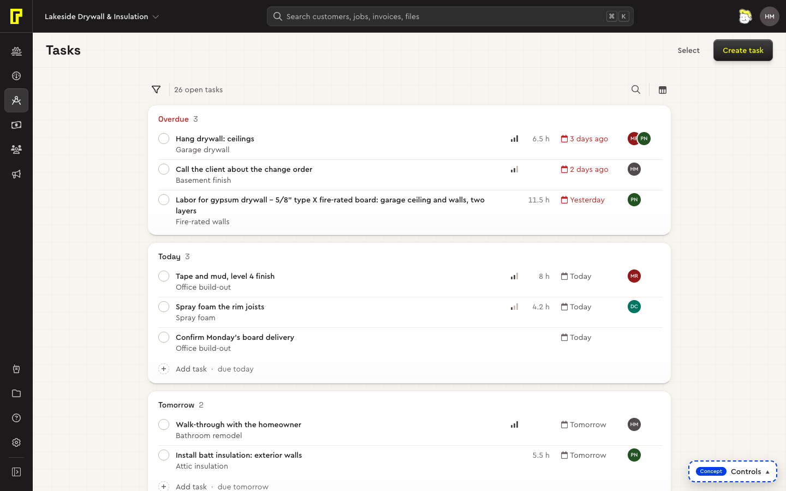
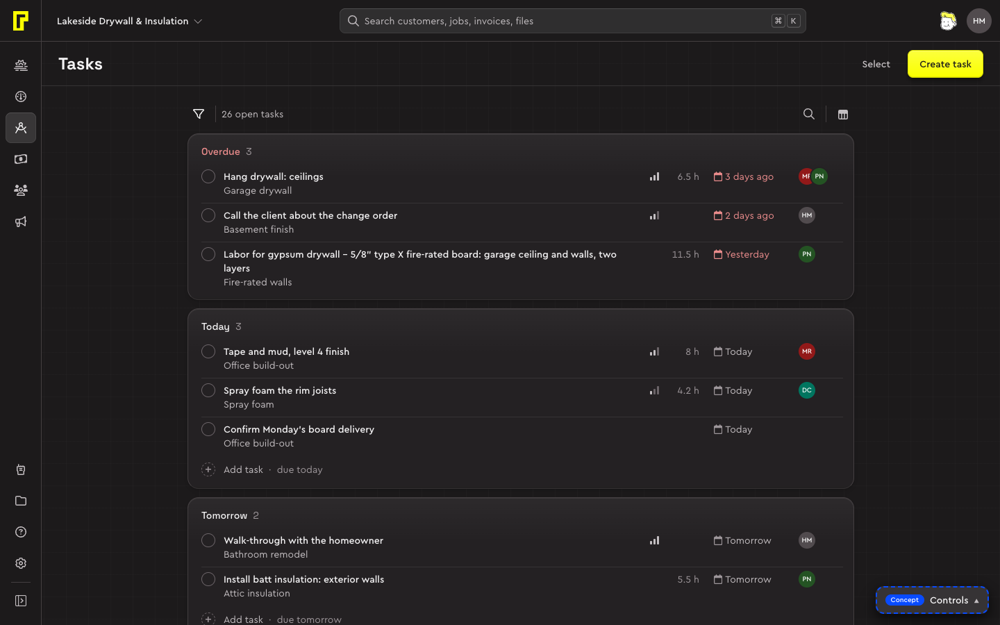

Garage drywall
Lakeside Drywall · $12,400
Code
<section class="card" style="inline-size:16rem">
<header class="card-header"><h3>Garage drywall</h3></header>
<div class="card-body stack" style="--stack-gap:var(--space-2)"><p class="text-secondary">Lakeside Drywall · $12,400</p><button class="button" data-variant="secondary" data-size="sm">Schedule visit</button></div>
</section>
<div class="menu" role="menu" aria-label="Job" data-state="open">
<button type="button" class="menu-item" role="menuitem">Duplicate</button>
<button type="button" class="menu-item" role="menuitem">Move to pipeline</button>
<hr class="menu-separator">
<button type="button" class="menu-item" role="menuitem" data-tone="danger">Delete</button>
</div>
<div class="toast" data-tone="success" role="status"><span class="toast-message">Job duplicated</span><button class="toast-action">Undo</button></div>The product is a few layers deep: the page, the cards on it, and what floats over them for a moment (a menu, a dialog, a toast). Each layer has its surface colour and its shadow, so you can tell what's on what at a glance, and each has its place in one stacking order.
Surfaces from the canvas up
--color-surface-… | What sits there | Shadow |
|---|---|---|
canvas | The page itself, with the canvas grid on it. The page header where it scrolls away. | None |
sunken | A track something sits in: the segmented control, the pinned scrollbar's track. | None |
default | Cards, the table card, fields. | The card's own body |
raised | What floats: menus, popovers, dialogs, the action bar; a segmented control's picked option. | popover, overlay, raised |
chrome | The top bar, the rail, the phone's tab bar, the job workspace's header. Dark in both themes. | None; the expanded rail takes overlay |
inverse | Toasts, the floating bulk bar: dark in light, near white in dark, so they stand out from anything under them. | overlay |
In light, default and raised are both white, and the shadow tells them apart. In dark a shadow hardly shows on near black, so height reads as lightness instead: the canvas is darkest, cards a step lighter, and what floats lighter again.
Other surfaces have one job each: the section sidebar's, the table header's, a group row's, the tooltip's, and the scrim behind dialogs and sheets. See Colour for all of them.
The surface says it's raised
Some things look different on the page and on something raised. Rather than a variant for each, the surface says once what it is, and what sits on it reads that (D78). In base.css, cards, dialogs, popovers, menus, the floating bar and toasts set --surface-raised: 1; the page is 0.
- A secondary button has its body and lifts on the page; on anything raised it lies flat with the card's edge. A lifted button on a lifted surface would be elevation twice.
- A toolbar's rule is the card's line on a card and the stronger
line-defaulton the page, where the faint one would vanish (D83). - A surface the list doesn't know marks itself:
data-surface="raised", or"canvas"to go back to the page's look inside one.
Code
<div class="cluster"><button class="button" data-variant="secondary" data-size="sm">Today</button><span class="text-caption">On the page: lifted</span></div>
<section class="card"><div class="card-body cluster" style="padding-block-start:var(--space-5)"><button class="button" data-variant="secondary" data-size="sm">Today</button><span class="text-caption">On a card: flat</span></div></section>/* base.css: the surface says it once */
:where(.card, .dialog, .pop, .menu, .floating-bar, .toast, [data-surface="raised"]) { --surface-raised: 1; }
:where([data-surface="canvas"]) { --surface-raised: 0; }Shadows
Three shadows, by how far something floats, and the card's own (D149): each for its own things, so what floats over the page never looks like what opened from a button.
Code
<div class="stack" style="--stack-gap:var(--space-2)"><span style="display:block;inline-size:8rem;block-size:4rem;border-radius:var(--radius-md);background:var(--color-surface-raised);box-shadow:var(--shadow-raised)"></span><span class="text-caption">raised</span></div>
<div class="stack" style="--stack-gap:var(--space-2)"><span style="display:block;inline-size:8rem;block-size:4rem;border-radius:var(--radius-lg);background:var(--color-surface-raised);box-shadow:var(--shadow-popover)"></span><span class="text-caption">popover</span></div>
<div class="stack" style="--stack-gap:var(--space-2)"><span style="display:block;inline-size:8rem;block-size:4rem;border-radius:var(--radius-lg);background:var(--color-surface-raised);box-shadow:var(--shadow-overlay)"></span><span class="text-caption">overlay</span></div>- Raised barely lifts a control out of its group: a segmented control's picked option, the current sidebar item.
- Popover is for what opens from something and stays by it: menus, popovers, the combobox's list, tooltips (D150). It's tinted with the page's cement in light.
- Drag is what's in your hand: a pipeline card, a to-do row, a calendar event being moved. It's picked up from its raised shadow and grows by
--drag-scale(1.02), so lifting reads as a motion, not a jump (D151). - Floating buttons on phones (Create, the menu button) carry their own body, so their fall is a filter around them:
--drop-shadow-float, and--drop-shadow-float-overfor the menu button, a step above Create. - Sticky things cast none. A header, a toolbar or a table's head that sticks keeps its rule underneath; the page slides under the rule, flat (D128, D151).
- Overlay floats over everything: dialogs, toasts, the floating bar, the action bar, the rail when it widens over the page.
- Cards wear the card's body (D148): a light line along the top, a darker bottom edge, a tight contact shadow and a soft ambient one, tinted with the page (cement in light, black in dark). Its four shadows are tokens:
--shadow-cardat rest,-hover,-pressedand-selectedfor the summary cards, which are buttons (Card). - Buttons draw their own body, louder than a card's, so they stay the things you press (Button).
In dark
Shadows can't be written with light-dark(), so they're set again for dark: black at 40 to 50%, where light uses 6 to 14%, and the popover shadow becomes the overlay one. The cards' shadows grow two and a half times, and their top line carries the edge. Even so, a surface's lightness does most of the work in dark (D14).
| Token | Preview | Value | Use |
|---|---|---|---|
--shadow-raised | 0 1px 2px rgb(0 0 0 / 0.06), 0 1px 3px rgb(0 0 0 / 0.08) | ---------- Depth (D149) ---------- By how far something floats, each shadow for its own things: the card's body (--shadow-card, below) for cards; raised for a control lifted out of its group (the segmented control's pick, the current nav item); popover for what opens from something and stays by it (menus, popovers, the combobox's list, tooltips), tinted with the page in light; overlay for what floats over the whole page (dialogs and sheets, toasts, the floating bar, the sidebar and rail when they slide over it); drag for what's in your hand (a card, a row, an event being moved: D151). Sticky things cast none: a rule marks where the page goes under them (D151) | |
--shadow-overlay | 0 4px 12px rgb(0 0 0 / 0.1), 0 12px 32px rgb(0 0 0 / 0.12) | ||
--shadow-drag | 0 4px 12px rgb(0 0 0 / 0.1), 0 12px 32px rgb(0 0 0 / 0.12) | ||
--shadow-popover | 0 2px 6px mix(cement-950 8%, transparent), 0 12px 32px mix(cement-950 14%, transparent) | ||
--color-shadow-tint | light-dark(cement-950, #000) | the colour shadows are mixed from (cards, secondary buttons): cement in light, black in dark | |
--shadow-card | inset 0 0 0 0 transparent, inset 0 1px 0 rgb(255 255 255 / 0.8), inset 0 -1px 0 rgb(0 0 0 / 0.05), inset 0 1px 3px rgb(0 0 0 / 0), 0 1px 2px mix(cement-950 7%, transparent), 0 4px 10px mix(cement-950 4.5%, transparent) | ||
--shadow-card-hover | inset 0 0 0 0 transparent, inset 0 1px 0 rgb(255 255 255 / 0.8), inset 0 -1px 0 rgb(0 0 0 / 0.05), inset 0 1px 3px rgb(0 0 0 / 0), 0 1px 2px mix(cement-950 11.2%, transparent), 0 4px 10px mix(cement-950 7.2%, transparent) | ||
--shadow-card-pressed | inset 0 0 0 0 transparent, inset 0 1px 0 rgb(255 255 255 / 0.32), inset 0 -1px 0 rgb(0 0 0 / 0.05), inset 0 1px 3px rgb(0 0 0 / 0.1), 0 1px 2px mix(cement-950 0%, transparent), 0 4px 10px mix(cement-950 0%, transparent) | ||
--shadow-card-selected | inset 0 0 0 1px action-accent, inset 0 1px 0 rgb(255 255 255 / 0.464), inset 0 -1px 0 rgb(0 0 0 / 0.05), inset 0 1px 3px rgb(0 0 0 / 0.07), 0 1px 2px mix(cement-950 2.1%, transparent), 0 4px 10px mix(cement-950 1.35%, transparent) |
| Token | Value | Use |
|---|---|---|
--drop-shadow-float | drop-shadow(0 6px 14px rgb(0 0 0 / 0.18)) | a floating button on phones (Create, the menu button) has its own body, so its fall is a filter around it, not a box-shadow; the menu button sits a step above Create (D151) |
--drop-shadow-float-over | drop-shadow(0 2px 4px rgb(0 0 0 / 0.16)) drop-shadow(0 12px 24px rgb(0 0 0 / 0.28)) | |
--drag-scale | 1.02 | what's picked up grows by this, from its raised shadow to the drag one (D151) |
Layers
What overlaps what is one scale of named steps (D9). Use the name, never a number; inside a component, a step plus one or two orders its own parts.
| Token | Value | What sits there |
|---|---|---|
--z-base | 0 | The page. |
--z-raised | 10 | Parts that stick inside the page: a table's header cells, the list's toolbar. |
--z-sticky | 100 | The page header, the action bar, the floating bulk bar. |
--z-shell | 200 | The top bar, the rail, the phone's tab bar. |
--z-modal | 400 | The section sidebar when it opens over the page, 768 to 1023 wide. |
--z-popover | 500 | The rail widened over the page. |
--z-toast | 600 | The toast region. |
--z-tooltip | 700 | CSS tooltips. |
--z-drag | 800 | What's in your hand while it moves: a card, a row, an event, a dependency being drawn (D151). |
The product rendered 22 different values, up to 2147483647.
The top layer
Dialogs and menus don't need a z-index at all. A <dialog> opened with showModal() and an element with popover are drawn in the browser's top layer, above everything on the page, whatever its z-index (D16). The platform also gives them Escape, focus handling and, for dialogs, an inert page behind. Their backdrop is ::backdrop, painted with --color-surface-scrim. See Dialog (I1), Menu (I3) and Popover.
<button class="button" data-variant="secondary" popovertarget="job-menu" aria-haspopup="menu">Actions</button>
<div class="menu" id="job-menu" popover role="menu" aria-label="Job">…</div>
<dialog class="dialog" aria-labelledby="archive-title">…</dialog> <!-- dialog.showModal() -->The canvas grid
Behind every page there's a faint grid, lit softly around the pointer (D81). A quarter of it stays lit everywhere, so phones, with no pointer, still see it. In dark a soft blue-violet light sits under it. It belongs to the app shell, not to a page.


- Decoration only: behind the content, hidden from screen readers, ignoring the pointer, never on the cards.
- On by default.
data-grid="off"on the root turns it off. - Styles in the system (
shell.css, on the--net-*tokens); behaviour in the shell (BolsterShell.canvasinconcepts/shared/shell.js), which puts its two layers in every page's main area, sizes the cells from the page header and moves the light. Pages carry no markup for it. - The cells are half as tall as the page header and start at the main area's corner, so one line runs along the header's bottom rule. A header that scrolls away is transparent over the grid; one that sticks keeps its background.
| Token | Value | What it sets |
|---|---|---|
--net-cell | 32px | The cell's size; the shell sets it from the page header's height. |
--net-w | 1px | The line's width. |
--net-line-l, --net-line-la | cement 950 at 0.09 | The line in light. |
--net-line-d, --net-line-da | white at 0.07 | The line in dark. |
--net-base | 0.25 | How much of the grid shows away from the pointer. |
--net-r, --net-ratio, --net-core, --net-peak | 260px, 1.3, 10%, 1 | The lit ellipse around the pointer: its height, how much wider it is, its solid core, its strength. |
--net-glow-d, --net-glow-da, --net-gr | blue print 300 at 0.12, 420px | The light under the grid in dark (none in light). |
--net-fade | 800ms | How long the light takes to come and go. |
Usage
- Use the layer names; a raw z-index number is a bug.
- Open overlays as
<dialog>orpopoverso they're in the top layer, rather than lifting a div over the page. - Don't put a raised surface on a raised surface with both lifting: let the surface tell what's on it to lie flat.
Decisions and contracts
- D9Layer scaleDecided
- D14Dark themeProposed
- D16Overlays use the platformDecided
- D33The status quo: warm light, cool dark, and the list page in the systemDecided
- D78The field button folds into secondary; the surface decides its bodyDecided
- D81The canvas grid is every page's backgroundDecided
- D83A toolbar's rule is stronger on the pageDecided
- I1Dialog (modal)
- I3Menu